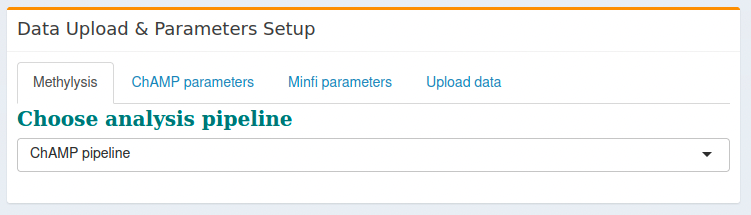
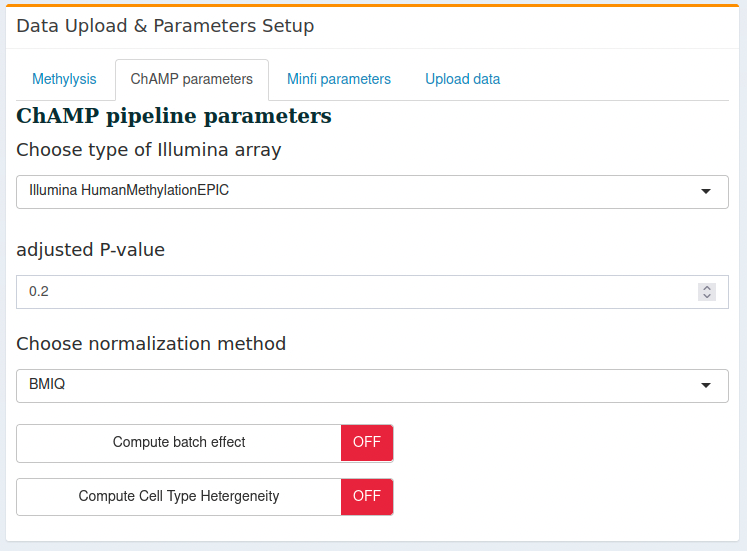
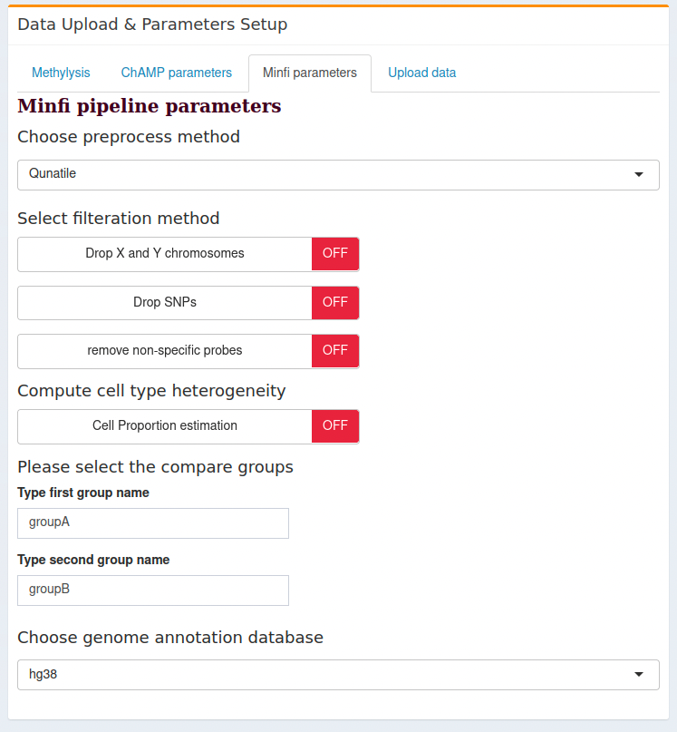
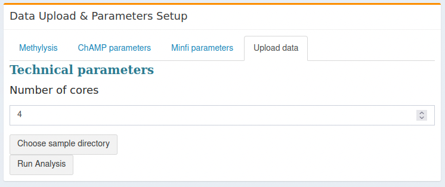

Methylysis
Contents
1. Methylysis¶
Methylysis is a tool to analyze the DNA methylation data for two different Illumina arrays, 450K and 850K array. The current tool uses two most used well-defined pipelines, named The Chip Analysis Methylation Pipeline ChAMP and minfi pipeline. We introduced different input options for the user to run both pipelines in a more customized way. Based on the above-mentioned pipelines, we selected the user’s options. Users can run either pipeline of their choice with different filteration criteria, and of course they can use two different runs and compare the results by themselves using downstream processing, like Venn analysis.
Please note
After loading the sample directory, the pipeline will start immediately by displaying the notification ”Computing methylysis, please wait…”. When the notification turns off, the user can go to different tabs to display the result. Please wait 10-15 seconds to display the result on the tab. Depending on the sample size, it may requires more time to display properly.
If the methylysis page goes dim, the analysis may encounter some errors during the run and the program stops working. Please refresh the page and run the same analysis again with different filteration criteria. Example, for ChAMP pipeline, if the user select the “adjusted P-value” = 0.05 (as default), may be for the sample data, there is no differentially methylated CpGs at that value. Please change the adjusted P-value (recommend to set it at 1, and check the table after the run that what is appropriate cut-off) and run the pipeline again.
1.1. How to use¶
Details are provided below -
1.1.1. Data upload & Parameters setup¶
The current version can handle the upload of the data directory. Please put all RAW idat files (as generated by the Illumina sequencer) and the “Sample_sheet.csv” together in a directory.
1.1.1.1. Structure of sample_sheet.csv¶
The Sample_sheet.csv must have the following components -
Sample_Name
Sample_Group
Sentrix_ID
Sentrix_position
Note If the user uses Microsoft Excel to build the Sample_sheet.csv, please check that
Sentrix_ID : are in text format (not in number format, which Excel will change to scientific numbers and will not properly displayed).
Optional check: Copy and paste the Excel table of Sample_sheet in some text editor like notepad or VS code and check the format.
To download a template of Sample_sheet.csv, please check here.
1.1.1.2. Parameters setup¶
1.1.1.2.1. Choose analysis algorithm¶
Currently, we have included two most usable algorithms to analyze the data - ChAMP and minfi. 
1.1.1.2.1.1. ChAMP pipeline parameters¶
Choose type of Illumina array: Two options are provided to choose, namely EPIC/850K array and 450K array from Illumina array analysis.
Adjusted P-value: User can define there own adjusted P-value to run the analysis. The default is 0.05.
Normalization: User can choose different normalization methods from the drop-down list,
Batch Effect Correction: ComBat function is used to correct the batch effect. User can choose whether to compute the batch effect or not by clicking the button. When the button is green (ON), then the pipeline will compute the batch effect and if the button is red (OFF), the pipeline will continue without analyzing the batch effect. Please check the reference for the batch effect correction using combat method [JLR07].
Cell Type Heterogeneity: Houseman et al (2013)[HAK+12] algorithm is applied to calculate the cell-type heterogeneity from PBMC dataset using the refbase function. This is deactivated as default. Press the button to activate and run during the analysis. 
1.1.1.2.1.2. minfi pipeline parameters¶
Choose preprocess method : There are several methods available for preprocessing or normalizing the raw data using the RGset. Here we listed them as the user’s input options to select the preprocess/normalization method as per their choice:
Raw: No processing of the raw data,
SWAN: Subset Quantile Within array Normalization [MGO12],[TT12],
Qunatile: Quantile normalization method [MGO12],
Noob: Noob preprocessing [TJWVDB+13],
Illumina: llumina preprocessing, as performed by Genome Studio (reverse engineered by minfi authors) [AJCB+14]
Funnorm: Funcational normalization [FLL+14]
Select filteration method: In this section, we assigned options for the user to perform the different filters, like removal of XY chormosomes from the analysis, removal of SNPs or removal of non-specific probes from the dataset. By default, the pipeline will use p-value detection 0.01.
Compute cell type heterogeneity: similar as ChAMP, we used Houseman method to correct the cell type heterogeneity. In minfi pipeline we used default minfi function estimateCellCounts. As before, user can choose to avoid this if the samples are not from PBMC cell types.
Please select the compare groups: In this option, the pipeline will ask the user to type the group names which will be compared for the differential methylation analysis. To compute the ContrastsMatrix, these group names will be used. Please use the same groups as provide in the Sample_sheet.csv.
Choose genome annotation database: To annotate the DMC list from the analysis, use the human genome reference annotation data file. For 850K array, make sure to use the hg38 array to compare the result with the output of ChAMP pipeline. 
1.1.1.2.1.3. Technical setup:¶
Number of cores: Both pipeline can run on 1 core which will take more time to compute the entire process. User can choose to setup the number of cores depending the availability. Please select maximum (n-1) cores (where n is the number of total cores in the computer).
Data upload The user should set the parameters first and choose all parameters as described above and then upload the data directory. As soon as the pipeline finishes the upload of the data directory, it will start running the analysis. 
1.1.1.2.2. Requirement for data upload¶
idat files: all idat files, green and red as received from Illumina sequencing array should be provided for the analysis. All files should be in one directory/folder.
Sample_sheet.csv: the “Sample_sheet.csv” should also be provided in the same directory with idat files and
1.2. Analysis Result¶
We implemented two different appraoches to save/view the analysis result. A. First, all results from the analysis pipeline will be saved in the same folder from where the data loaded, and B. Second, using the on-screen visualization tool.
In the visaulization tabs of methylysis tool, we introduced 4 tabs for differential methylation analysis result,
QC result: QC result from each pipeline mentioned above will be generated and presented here in PDF format. User can download the PDF, however the result will also be saved in the data directory.
Normalized data table: Only first 100 rows from the normalized \beta values will appear in the visualization tab. The full result will be saved on the data directory.
Cell type deconvolution plot: If user choose to analyze the cell type deconvolution, the analysis figure will appear here. Please note, current version only supports the PBMC deconvolution.
DMC table: First 100 rows of the differentially methylated CpGs will appear here and the full result will be saved as mentioned above.
1.3. R packages used¶
ChAMP bioconductor
minfi bioconductor
IlluminaHumanMethylation450kanno.ilmn12.hg19
IlluminaHumanMethylationEPICanno.ilm10b5.hg38
IlluminaHumanMethylation450kmanifest
RColorBrewer
missMethyl
matrixStats
minfiData
Gviz
DMRcate
stringr
RCurl
Biobase